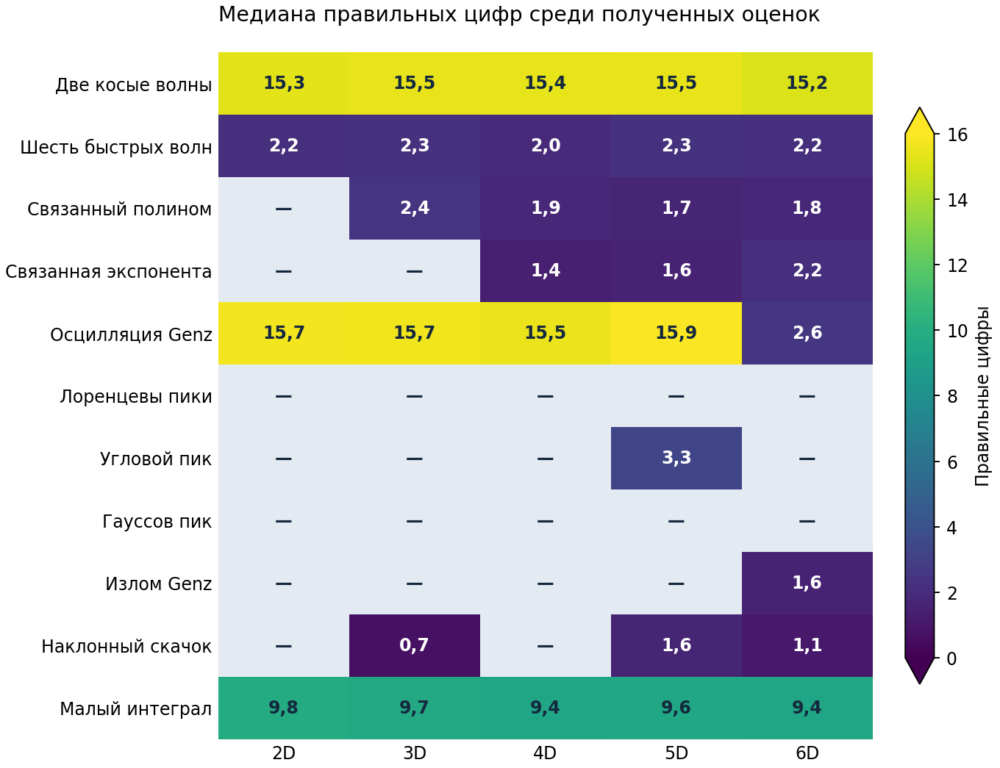
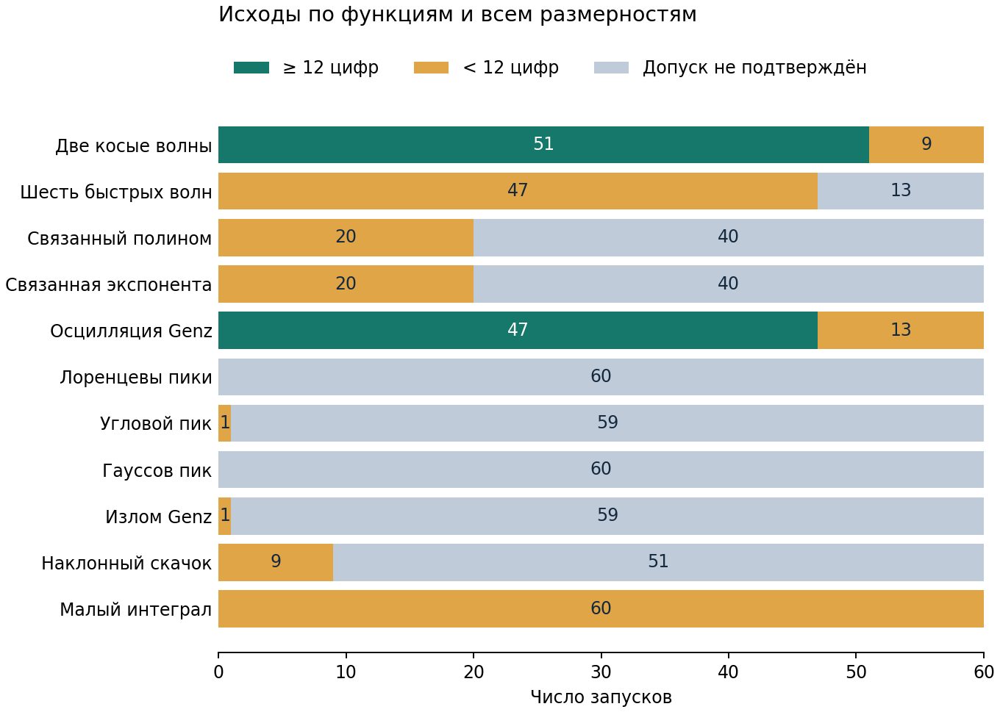
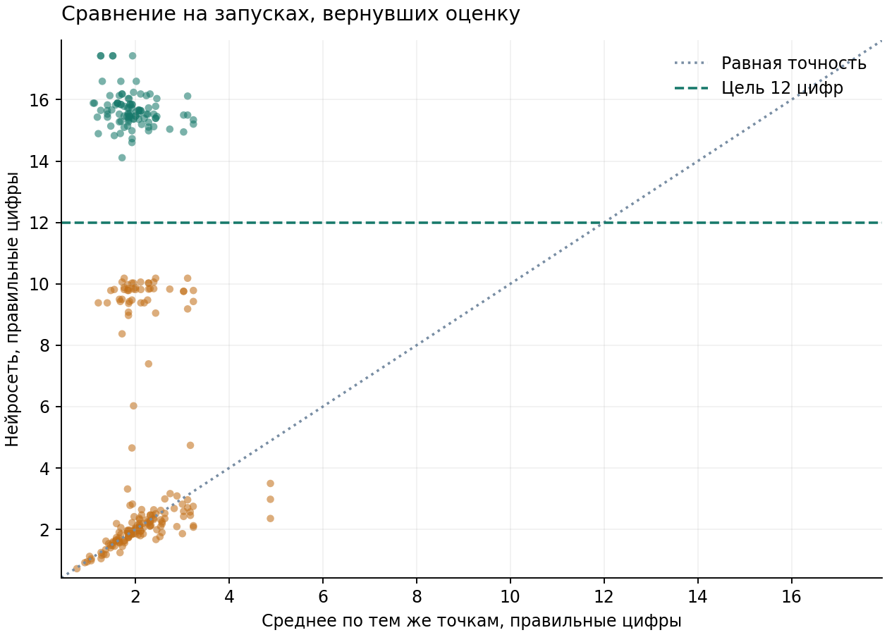

Интегрирование через объём воды
2D–6D · 11 поверхностей · 4 бюджета · 3 seed на каждый бюджет.
Правильные цифры вычислены как −log10 относительной ошибки.
660запусков
98с точностью ≥12 цифр
382отказов проверки диапазона
278численных оценок
Точность по функциям и размерностям
В ячейке указана медиана правильных цифр среди полученных оценок,
число допусков из 12 запусков и число оценок с ≥12 цифрами.
Бирюзовым выделены ячейки, где хотя бы один запуск достиг цели.
| Функция | 2D | 3D | 4D | 5D | 6D |
|---|
| Две косые волны | 15,32допуск 12/12 · ≥12 12 | 15,46допуск 12/12 · ≥12 11 | 15,39допуск 12/12 · ≥12 10 | 15,47допуск 12/12 · ≥12 9 | 15,17допуск 12/12 · ≥12 9 |
|---|
| Шесть быстрых волн | 2,21допуск 4/12 · ≥12 0 | 2,25допуск 9/12 · ≥12 0 | 1,98допуск 10/12 · ≥12 0 | 2,32допуск 12/12 · ≥12 0 | 2,23допуск 12/12 · ≥12 0 |
|---|
| Связанный полином | —допуск 0/12 · ≥12 0 | 2,41допуск 1/12 · ≥12 0 | 1,87допуск 6/12 · ≥12 0 | 1,67допуск 7/12 · ≥12 0 | 1,78допуск 6/12 · ≥12 0 |
|---|
| Связанная экспонента | —допуск 0/12 · ≥12 0 | —допуск 0/12 · ≥12 0 | 1,41допуск 4/12 · ≥12 0 | 1,61допуск 7/12 · ≥12 0 | 2,19допуск 9/12 · ≥12 0 |
|---|
| Осцилляция Genz | 15,69допуск 12/12 · ≥12 12 | 15,67допуск 12/12 · ≥12 11 | 15,53допуск 12/12 · ≥12 10 | 15,89допуск 12/12 · ≥12 9 | 2,56допуск 12/12 · ≥12 5 |
|---|
| Лоренцевы пики | —допуск 0/12 · ≥12 0 | —допуск 0/12 · ≥12 0 | —допуск 0/12 · ≥12 0 | —допуск 0/12 · ≥12 0 | —допуск 0/12 · ≥12 0 |
|---|
| Угловой пик | —допуск 0/12 · ≥12 0 | —допуск 0/12 · ≥12 0 | —допуск 0/12 · ≥12 0 | 3,32допуск 1/12 · ≥12 0 | —допуск 0/12 · ≥12 0 |
|---|
| Гауссов пик | —допуск 0/12 · ≥12 0 | —допуск 0/12 · ≥12 0 | —допуск 0/12 · ≥12 0 | —допуск 0/12 · ≥12 0 | —допуск 0/12 · ≥12 0 |
|---|
| Излом Genz | —допуск 0/12 · ≥12 0 | —допуск 0/12 · ≥12 0 | —допуск 0/12 · ≥12 0 | —допуск 0/12 · ≥12 0 | 1,62допуск 1/12 · ≥12 0 |
|---|
| Наклонный скачок | —допуск 0/12 · ≥12 0 | 0,72допуск 1/12 · ≥12 0 | —допуск 0/12 · ≥12 0 | 1,63допуск 4/12 · ≥12 0 | 1,11допуск 4/12 · ≥12 0 |
|---|
| Малый интеграл | 9,83допуск 12/12 · ≥12 0 | 9,67допуск 12/12 · ≥12 0 | 9,38допуск 12/12 · ≥12 0 | 9,60допуск 12/12 · ≥12 0 | 9,42допуск 12/12 · ≥12 0 |
|---|
Сравнение бюджетов
По всем полученным оценкам мин / среднее / макс составили 0,72 / 8,15 / 17,43.
Допуск означает, что амплитудная оценка гарантирует глубину воды в [0, 1] на кубе.
| Бюджет | Нейроны | Точки | Предел частот |
Допущено | ≥12 цифр | Цифры, мин / сред. / макс |
|---|
| pilot | 2 | 256 | 8 | 81/165 | 28 | 0,72 / 7,93 / 17,43 |
|---|
| more_samples | 2 | 1024 | 8 | 72/165 | 27 | 1,25 / 8,91 / 17,43 |
|---|
| wider | 8 | 1024 | 8 | 52/165 | 30 | 1,95 / 11,90 / 17,43 |
|---|
| wide_band | 8 | 1024 | 24 | 73/165 | 13 | 1,40 / 4,96 / 17,43 |
|---|
Графики

Серые ячейки соответствуют функциям и размерностям без допущенных оценок.

По каждой функции было 60 запусков.

На допущенных запусках нейросеть превзошла среднее по тем же точкам в 199 из 278 случаев.
Данные
Все запуски · Сводка по бюджетам